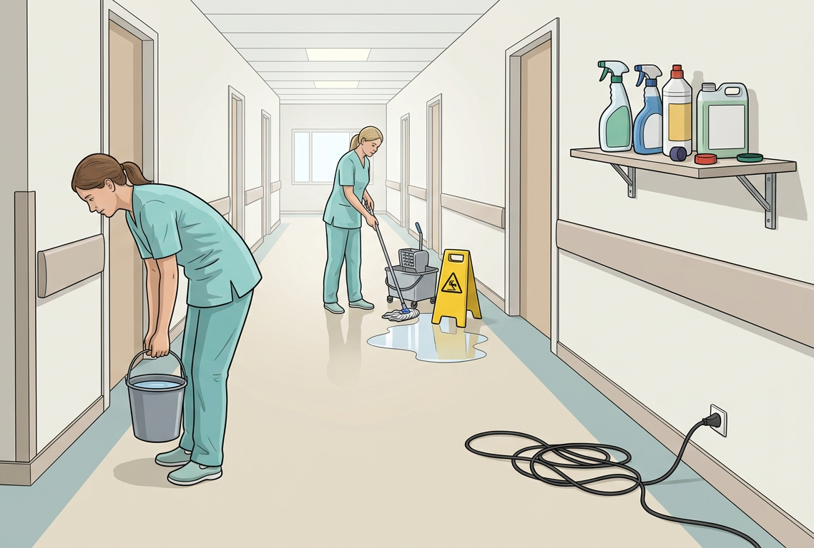

Tilbage til Arbejdsmiljø · Tilbage til forsiden Find 5 fejl Se på billedet af serviceassistenterne. Der er 5 arbejdsmiljømæssige risikofaktorer. Træk den rigtige risiko hen til det rigtige sted på billedet. 